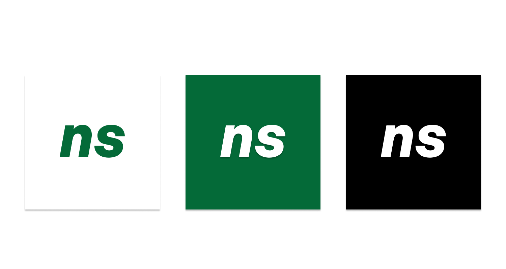

ninersoftware
Software built for niners, by niners.
3.5k+ downloads across projects
seen on the Niner Times
featured in campus media
what is ninersoftware?
ninersoftware is an open-source campus software collective at UNC Charlotte. We build high-quality, open-source software to solve real problems for students, faculty, and the campus community.
The idea of ninersoftware came about after the creation of NinerRatings, as a way for students to maintain the project. It has now flourished into a place where students can gain real experience and work on projects with real student users.

featured projects
Niner Registration
From the creator of NinerRatings, Niner Registration is the expanded all-in-one registration tool for Charlotte students. Features grade distribution charts, inline RateMyProfessors ratings, calendar builder, and a completely redesigned course overview.

Interested?
Projects
Team
Join
This form is to gauge interest for the club. Development may be open to join either in the Fall, or the Spring.